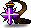

楓憶MapleMemory
新楓之谷：經典版資料庫
☰
☾
楓葉圖鑑
怪物
道具
任務
地圖
技能
實用工具
卷軸模擬器
戰鬥力計算機
戰鬥分析
線上紙娃娃
Boss 計時器
轉蛋模擬器
三轉題庫
女神組隊
經驗物工具
其他
技改資訊
萬聖節活動
遊戲更新日誌
網頁更新日誌

三轉題庫
答題查詢
任務流程與對話
題目搜尋
分類
全部分類
答案依本地資料與玩家回報整理，非伺服器答案表。
找不到符合的題目。
職業
下載對話文字檔
流程依本地對話整理。客戶端保留對話字串，但未包含伺服器端完整條件與分支判定；下列取消、未達條件與完成後對話不代表都會依序出現。
本地完整對話字串
資料依據
請啟用 JavaScript 以搜尋題目。
下載本地對話文字檔